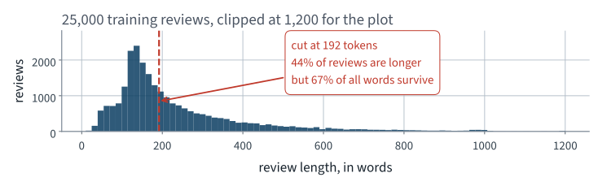
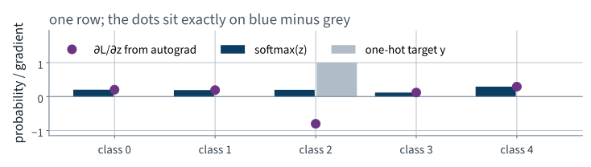
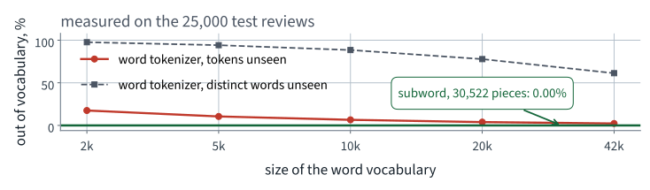
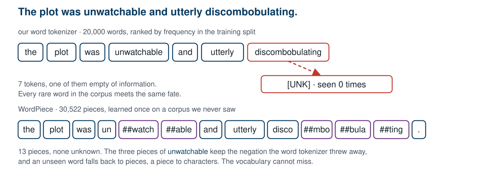
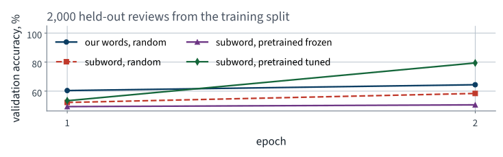
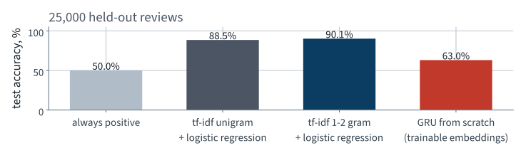
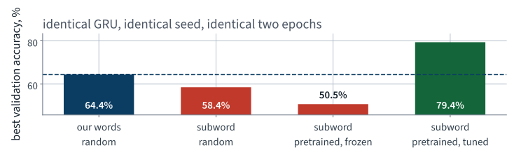

IMDb
Lecture 17 Géron Ch. 14
Applications of Machine Learning
BSc Mathematics of Artificial Intelligence · Third year
Last lecture, recurrent networks on an ordered series. What carries over:
| What we found | Why it matters today |
|---|---|
| A recurrent layer reads a sequence step by step and returns one fixed-size state | today the sequence is a review, and that state is what we classify |
| Gated cells keep a long sequence trainable; on the ridership forecast the GRU beat the plain cell and the LSTM | today’s classifier is a GRU |
| A ranking that rested on one seed flipped when only the seed changed | every comparison today is one seed, and we say what that can settle |
| Every model was read against a baseline that needs no learning, on the same rows | today’s anchor is a bag of words, measured first |
New today: the input is free text — variable length, discrete, and with no natural numeric encoding at all.
A streaming service’s customer-feedback desk.
Every title carries free-text reviews. Nobody reads them. The desk wants, for each new review, a single label — satisfied or not — so that the unhappy ones can be routed to a human within the hour.
| Their words | What that specifies |
|---|---|
| “tell us if it is a complaint” | binary classification |
| “from the text alone” | one variable-length string in, one label out |
| “within the hour” | inference cost matters; training cost does not |
| “we will read the ones you flag” | the errors are absorbed by a human |
Four sentences, and every one of them is a design decision you would otherwise have made silently.
Everything in Chapters 1–13 arrived as a table: a fixed set of features, in a fixed order, each a number or a category.
So before any model, there is a question no previous application had to answer: what is the unit?
The Large Movie Review Dataset — the corpus the book uses for sentiment. Fetched from Stanford directly, about 80 MB.
URL = "https://ai.stanford.edu/~amaas/data/sentiment/aclImdb_v1.tar.gz"
def load_imdb():
if not DATA.is_dir():
urllib.request.urlretrieve(URL, tarball)
with tarfile.open(tarball) as t:
t.extractall(path=CACHE, filter="data")
...
A function, not a manual download — so a cold kernel can rebuild it. The split into train and test ships with the corpus, so every course in the world reports on the same reviews.

A long tail. Wherever you cut, you cut something — so the cut is a decision to make on purpose and record.
Cutting at 192 truncates 43.8% of the training reviews and keeps 66.7% of all their words.
Two numbers per review: one score per class. Everything between the string and those two numbers is what we build today.
Only the first two are new. The last two are Lectures 8 and 16 unchanged.
From Lecture 3: count the classes before choosing a metric. We counted. They are 50.0% to 50.0%.
It is defensible on this corpus. Real feedback is not balanced, and the first slide of the next application you build should ask the question again.
One column per term in the vocabulary; one row per review; the entry is how often the term occurs, weighted down if the term is common everywhere.
$N$ is the number of documents and $n_t$ the number containing $t$. The second factor is what stops the and movie dominating the first. Scikit-Learn uses a smoothed variant, $\log\frac{1+N}{1+n_t} + 1$, and normalises each row to unit length.
Note what is not in that formula: position. The bag has no order, so it cannot see that not changes the word after it.
from sklearn.feature_extraction.text import TfidfVectorizer
from sklearn.linear_model import LogisticRegression
# fit on the training reviews ONLY — the vectoriser is a fitted estimator
vec = TfidfVectorizer(min_df=2, ngram_range=(1, 2),
max_features=200_000)
X_train = vec.fit_transform(train_x)
clf = LogisticRegression(max_iter=2000, C=4.0).fit(X_train, train_y)
acc = (clf.predict(vec.transform(test_x)) == test_y).mean()
print(f"tf-idf + logistic regression: {acc:.1%}")
Line 7 is fit_transform on the training reviews;
line 10 is transform on the test reviews. Different verbs. Hold
on to that — it is the last thing we do in the next lecture.
| Model | Features | Test accuracy |
|---|---|---|
| Always predict one class | — | 50.0% |
| tf-idf, single words | 44,798 | 88.5% |
| tf-idf, words and pairs | 200,000 | 90.1% |
90.1%, from counting words.
Adding pairs of adjacent words buys 1.6 points, and pairs are the cheapest way a bag can see not good. The brief’s other requirement — “within the hour” — is one the metric cannot see: a bag of words scores the whole test set long before the hour is up.
The last linear layer returns $K$ unbounded numbers, the logits $\mathbf{z}$. Softmax maps them to a probability vector:
The third point already tells you that
argmax does not need it. A prediction never requires softmax.
Between a target distribution $\mathbf{y}$ and a predicted $\mathbf{p}$:
A hard label is one-hot — $y_c = 1$, the rest 0 — so every term but one dies:

Differentiate $-\log p_c$ with respect to the logits and the result is prediction minus target. The dots are what PyTorch computed; the bars are what the algebra predicts. They agree to 5.551e-17.
nn.CrossEntropyLoss applies the softmax itself, so it must be given logits: $\mathbf{p} - \mathbf{y}$ is the gradient only when the softmax is applied once.
| Stage | In | Out |
|---|---|---|
| Tokenize | one string | (192,) integers |
| Embed | (B, 192) | (B, 192, 128) |
| Recur | (B, 192, 128) | (B, 128) |
| Head | (B, 128) | (B, 2) |
Keep those four shapes in view. What is the shape here? is the question that catches most of what goes wrong from here on.
The unit the model counts as one thing.
This is a modelling decision, not a preprocessing detail. It fixes the vocabulary, the sequence length, and what the model can possibly represent.
WORD_RE = re.compile(r"[a-z0-9']+")
def word_tokens(s):
return WORD_RE.findall(s.lower().replace("<br />", " "))
That is the whole specification. Three decisions are already made in it, and every one is arguable:
<br /> is not a wordIf you had not looked at the raw text you would have
learned br as one of the commonest words in the corpus.

The token rate looks survivable. The rate over distinct words never does — and those are the informative ones.
Even at the full 42,370-word vocabulary of the fit split — every word in the 5,000 reviews a model fits on — 61.3% of the distinct words in the test set have never been seen. That is the floor of the upper curve.
Keep whole words for the common ones. Break the rest into pieces that are in the vocabulary.
Byte-pair encoding, and WordPiece, which differs only in the criterion for which pair to merge. Chapter 14 names both.
The merges are learned once, on some corpus, and then shipped. That is the first pretrained thing we use today.
Animation
Above, the rarest and most informative word became nothing. Below, it became four pieces the model has vectors for.
[UNK].
[UNK] destroyedToken 4271 is not four thousand of anything. The integer is a name, and arithmetic on names is meaningless.
The obvious fix is one-hot: 20,000 columns, one of them 1. That is a 20,000-dimensional vector per token, and 192 of them per review.
class GRUClassifier(nn.Module):
def __init__(self, vocab):
super().__init__()
self.emb = nn.Embedding(vocab, 128, padding_idx=0)
self.rnn = nn.GRU(128, 64, batch_first=True, bidirectional=True)
self.head = nn.Linear(2 * 64, 2)
def forward(self, x, lengths):
e = self.emb(x)
packed = nn.utils.rnn.pack_padded_sequence(
e, lengths.cpu(), batch_first=True, enforce_sorted=False)
_, h = self.rnn(packed)
return self.head(torch.cat([h[0], h[1]], dim=1))
Thirteen lines, and eleven of them are Lecture 8. The two new ones are the embedding and the packing.
| Choice | Why |
|---|---|
bidirectional=True | a review’s verdict can be in the first sentence or the last |
| the final hidden state | one fixed-size summary of a variable-length input |
| GRU, not LSTM | fewer gates and parameters, and on Lecture 16’s forecast it beat the LSTM |
h[0] is the forward direction’s last state,
h[1] the backward direction’s — which, read as a sequence,
is the first token. Concatenating them gives the head both ends.
pack_padded_sequence, and what it preventsIt hands the recurrent layer only the real timesteps, so the state returned for a review of 40 words is the state after its 40th word — not after 152 zeros.
This slide exists because the version without it also runs, also trains, and also reports a plausible number.
opt = torch.optim.Adam(model.parameters(), lr=1e-3)
lossf = nn.CrossEntropyLoss()
for epoch in range(2):
model.train()
for xb, lb, yb in batches:
opt.zero_grad()
out = model(xb, lb)
loss = lossf(out, yb)
loss.backward()
opt.step()
Exactly the five lines from Lecture 8, in the same order, with the same two silent failures waiting if any of them is deleted. Nothing about text changes the loop.
Note line 2. What CrossEntropyLoss is
actually given, and why, is the mathematics you have just been
through — softmax, cross-entropy and logits, earlier in this lecture.
| Setting | Value |
|---|---|
| Reviews used to fit | 5,000 |
| Reviews held out for validation | 2,000 |
| Reviews in the test set, untouched | 25,000 |
| Epochs, batch size, learning rate | 2, 64, 0.001 |
| Parameters | 2,634,754 |
The budget is small on purpose, so that the run fits a free CPU, and every number from here on is from it; Lecture 8 measured why the device rarely earns its place at this scale.

Ignore three of the four curves for now. The blue one is the model we have just built.
| Model | Test accuracy |
|---|---|
| Always one class | 50.0% |
| tf-idf + logistic regression | 90.1% |
| GRU, our tokenizer, trainable embeddings | 63.0% |
Hold on to the third number.
Then look at the second one for a moment before turning the page.

The recurrent network, with an embedding it learned itself, loses to counting words — by 27 points.
Written as a hypothesis on purpose. What follows is an experiment that can refute it, and you should decide now what result would.
So replace the table. Nothing else.
emb.weight changeTwo changes, applied one at a time, so that the measurement says which one did the work. Changing both at once and reporting the total is how you learn nothing from an experiment.
DistilBERT’s subword pieces
(distilbert-base-uncased) instead of our words — and the
embedding rows still random, exactly as before.
| Tokenizer | Vocabulary | Validation accuracy |
|---|---|---|
| our words | 20,000 | 64.4% |
| subword pieces, random vectors | 30,522 | 58.4% |
Worse, not better.
-6.0 accuracy points on the 2,000 validation reviews, from one seed each — not enough to call a ranking, but certainly not the gain the fix promised. Solving the out-of-vocabulary problem, on its own, bought nothing. The swap is read on validation, so the test set chooses nothing.
The same subword vocabulary already has a trained embedding
table, 768 columns wide. Projected to our 128 with PCA, as Z, it
goes into emb.weight and the architecture does not change.
model.emb.weight.data.copy_(torch.from_numpy(Z))
model.emb.weight.requires_grad = False # frozen — or True, tuned
| Frozen | Fine-tuned | |
|---|---|---|
| What is learned | the GRU and head only | everything |
| Risk | the vectors may not suit the task | 5,000 labels can overwrite them |
Which is better is not decidable from the armchair. Run both; it is one boolean.

Two things differ across these four bars: which tokenizer produced the ids, and what was in the embedding table at step zero.
Tuned, the pretrained table reaches 79.4%, +15.0 points over our words. Frozen, at 50.5% after two epochs, the model is still at chance: the table is a starting point that the 5,000 labels then adapt.
| Unchanged | Changed |
|---|---|
| GRU width, depth, direction | the tokenizer |
| the head, the loss, the optimiser | the initial values in one tensor |
| epochs, batch size, learning rate, seed | whether that tensor is trainable |
| the data, the split, the metric |
Everything on the left is what you would ordinarily spend the afternoon tuning. Everything on the right is a few lines of code — and with 5,000 labels and two epochs it was worth 15.0 validation points, more than any of the left-hand column is likely to buy.
[UNK]? Count itSix questions. The first is the one that will cost you the most, and it is the one the next lecture ends on.
h[0] with itself instead of h[1]. The
shapes and parameter count are unchanged, nothing raises, and the backward
direction is dead weight. What happens to the accuracy?
Design exercise · in the manner of an ML system-design interview
Nine steps follow, each with the pitfall that catches a first attempt and what to do about it. The model at the centre is today’s: a tokenizer, an embedding table and a recurrent classifier against a bag of words, per account.
| Pitfall | What happens | What to do |
|---|---|---|
| The first assignment as the label | that is the account’s old rule, or a tired agent’s; the model learns to imitate it, mistakes included | label with the team that closed the ticket, and only tickets that are closed |
| The ticket that bounced | three teams touched it; the closer is one of them by accident | keep the closing team, and flag bounced tickets so their share can be read separately |
| The ticket that belongs to two teams | a refund and a login failure; one softmax forces one answer | agree the rule with the account — the team that must act first owns it — and apply it when the label is read back |
Write the label’s definition down before the first fit. Every later number is a number about that label.
| Failure | What you see | What to do |
|---|---|---|
| Softmax before the loss | it trains, on the wrong gradient | logits into the loss; the loss applies the softmax itself |
| The state after the padding | a plausible number, slightly worse | carry the lengths, pack the batch, assert the logits ignore the padding |
| Truncation that removes the problem | long tickets routed by their greeting | count how much of each ticket survives the cut; keep the subject whole |
Closed tickets, labelled by the closing team → split by date → raw text inspected → subword vocabulary on the training tickets → bag-of-words anchor → pretrained embeddings, a packed GRU, logits into the loss → best validation epoch → confusion matrix on the test months → opt-in rollout, triage, monitor re-routes → retrain.
| Pitfall | Address it by |
|---|---|
| Accuracy under imbalance | per-team recall and the confusion matrix, beside the base rate |
| First assignment as label; two-team ticket | the closing team; a written rule for who acts first |
| A random split | splitting by date; testing on the latest months |
| Vocabulary built on all tickets | training tickets only; one tokenizer per account; unknown rate counted |
| Random embeddings on few labels | a pretrained table, tuned, one change at a time |
| The state after the padding | lengths carried, batches packed, an invariance test |
| The last epoch, or epochs chosen on test | the best validation epoch kept; the test set read once |
| Teams reorganised under the model | a versioned label set; re-routes as labels; a recent window |
Not presented — for afterwards
five, in the style of the written paper
forward ends in a softmax, and its output is passed to nn.CrossEntropyLoss. State what happens in training, and the fix. [5]Solutions on Lecture 18’s deck.
pack_padded_sequence. State what the returned state summarises for a review shorter than the cut, and a test that detects it. [5]Solutions on Lecture 18’s deck.
The five set at the end of Lecture 16
not part of this lecture
1. A recurrent network is trained on 56-day windows drawn from one series. Explain why shuffling the windows is…
A window is a training example; the series is the thing the example is cut from.
2. A one-layer RNN beats a three-layer RNN on test and on train. Re-run with only the seed changed, the same…
On one seed. The seed moves both the recipe each model's selection chooses and the fit itself, by more than the gap between the two models. Settle it with several seeds and a gap larger than their spread, or report it as unresolved.
3. Gates were introduced after a plain recurrent cell failed over long windows. State the mechanism, in terms of…
The gradient carries 56 copies of the same matrix, and powers of one matrix vanish or explode; gates provide an additive path whose derivative is near one.
4. A colleague builds the multivariate forecaster with day_type.shift(-1) as a feature and objects that it reads…
It is not a leak. Ask whether the value is available at prediction time: the next day’s type is on the public calendar, its ridership is not.
5. Report the training MAE beside the test MAE. Name the two failures the pair distinguishes, and say why the…
Underfitting, where both are poor, and overfitting, where train is far better. They have opposite fixes.
Lecture 18 · Géron Ch. 14–15
Scaled dot-product attention — queries, keys and values, and why the
scores are divided by $\sqrt{d_k}$
Fine-tuning a pretrained transformer on these reviews, against today’s
models
Sentence embeddings for search and grouping — and where a fitted step
leaks
Run the Lecture 17 notebook first